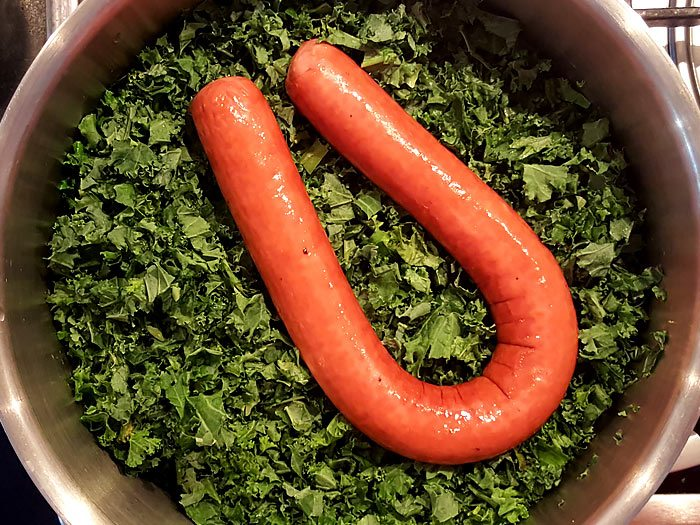

Delicious Boerenkool

In this recipe i will teach you how to make Boerenkool.
To make this beautiful Dutch dish you don't need a lot of ingredients
only a big pot and some heavy lifting are required for this all to work
out.
What do you need?
- 1kg Boerenkool
- 1kg Potatoes
- 2 Rookworsten (preferably HEMA worsten)
- 500g Bacon bits
- Pepper to your liking
Okay, so how do we make it?
- peel all the potatoes and throw them in the pot.
- Pour water in the pot until it reaches the potato level.
- Take the raw boerenkool and put that on top.
- On top of that put the rookworst and start boiling it all.
- While that's cooking take a skillet and bake the bacon bits
- When everything is done mash the boerenkool and the potatoes together
with the bacon bits and put it all on plates.
- Cut the rookworst, make sure everyone has a piece and enjoy!